What changed in Rev 0.9
- The cooler is the one actually fitted: Seeed's reComputer mini J501 heatsink with fan (S05/S06), a 2 mm copper spreader, a G48R tower with five 6 mm heat pipes and a 92 × 15 mm, 12 V fan, 50.3 mm tall above the thermal pad. The fan is centred on the module (the user's photo: its four ears sit on the module's mounting holes). Rev 0.8 had assumed the 34 mm WS-RDN-601, and its printed lid hit this cooler by about 15 mm.
- Enclosure 97 mm tall (Rev 0.8: 92 mm, Rev 0.7: 112 mm). The lid is cut away over the fan down to a flush 3 mm grille (12 spokes, 2 rings): the fan top is 2.4 mm under it, so the enclosure is only as tall as the cooler needs.
- Skirt around the fan frame (2.4 mm wall, 6 mm clear): the fan blows straight out through its grille, cool air comes in through the wall vents and the hex cells further out (the blind band next to the skirt keeps them away from the plume), and the cut-out is stiffened; the star ribs start on it, with round bosses at the joints.
- Recovery riser for a printed Rev 0.8 lid (tools/lid_riser.py, 18 mm, 4 × M3 × 30): not a release part.
Filament and print time
Measured with the Bambu Studio command line on a P1S (0.20mm Standard @BBL X1C, Bambu PLA Basic @BBL P1S 0.4 nozzle), the same profile for both revisions. These are the slicer's grams, not CAD volumes.
| Measure | Before | After | Change |
|---|---|---|---|
| Base (P1) | 188.3 g | 188.3 g | = same |
| Lid (P2) | 121.2 g | 129.2 g | ▲ +8.1 (+7 %) · worse |
| Front plate (P4) | 26.3 g | 26.3 g | = same |
| Rear plate (P5) | 25.4 g | 25.4 g | = same |
| Side hatch (P10) | 6.6 g | 6.6 g | = same |
| Enclosure total | 367.6 g | 375.7 g | ▲ +8.1 (+2 %) · worse |
| Print time, all five parts | 11.80 h | 11.75 h | ▼ -0.05 (-0 %) · better |
Assumptions and limits
- Slicer estimates for one copy of each part with the stated profile; supports off unless the profile turns them on.
- One copy of each part; only the lid changed between Rev 0.8 and Rev 0.9.
Strength and stiffness
Linear-elastic FEA (gmsh + scikit-fem, quadratic tetrahedra) on the printed shells, PLA with its layer-direction strength (25 MPa). The safety factor uses the 99.9th-percentile stress so one sharp corner (a mesh-dependent spike) does not decide it; the peak and where it is are in the JSON.
| Measure | Before | After | Change |
|---|---|---|---|
| 300 N on the lid: deflection | 0.72 mm | 1.25 mm | ▲ +0.53 (+73 %) · worse |
| 300 N on the lid: stress, 99.9th percentile | 8.4 MPa | 11.9 MPa | ▲ +3.5 (+42 %) · worse |
| 300 N on the lid: safety factor (99.9th percentile) | 2.99 | 2.11 | ▼ -0.88 (-29 %) · worse |
| 300 N on the lid: stiffness | 1,382 N/mm | 910 N/mm | ▼ -473 (-34 %) · worse |
| 300 N on the lid: roof deflection (fan grille aside) limit 1.19 mm (Rev 0.7 lid) | 0.72 mm | 0.65 mm | ▼ -0.07 (-9 %) · better |
| 300 N on the lid: fan grille deflection limit 1.44 mm: stays at least 1 mm off the fan, which sits 2.442 mm below | – mm | 1.25 mm | |
| Robot mounting, 10 g down + 5 g sideways: deflection | 0.91 mm | 0.91 mm | = same |
| Robot mounting, 10 g down + 5 g sideways: stress, 99.9th percentile | 6.7 MPa | 6.8 MPa | = same |
| Robot mounting, 10 g down + 5 g sideways: safety factor (99.9th percentile) | 3.71 | 3.69 | ▼ -0.02 (-1 %) · worse |
| Robot mounting, 10 g down + 5 g sideways: stiffness | 449 N/mm | 449 N/mm | ▲ +0 (+0 %) · better |

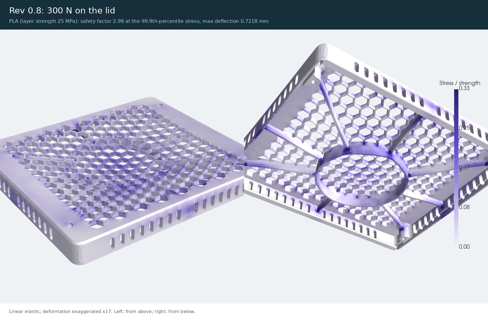

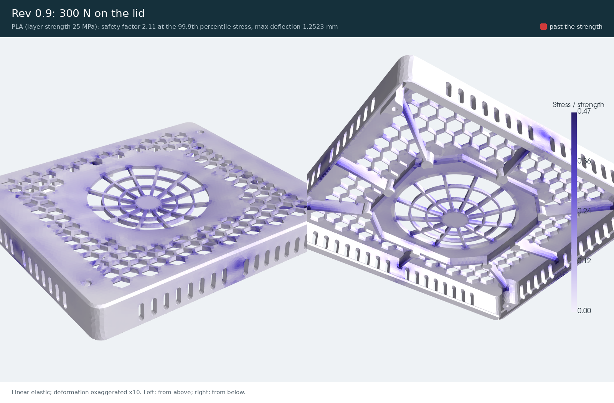

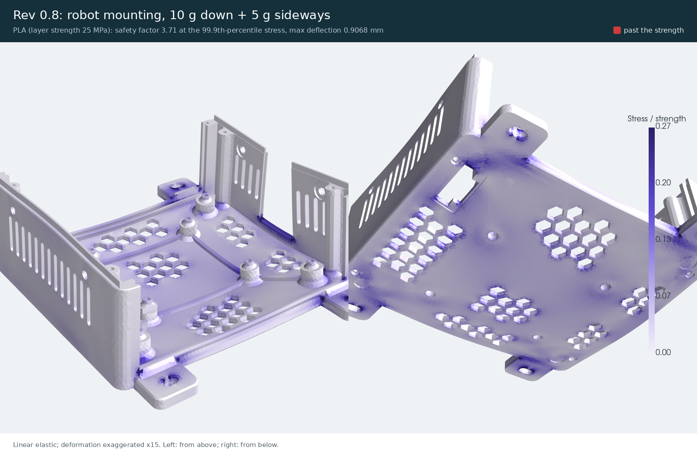

Assumptions and limits
- linear elastic, small deflection, isotropic (printed parts are weaker across layers: the layer strength is used)
- no contact, bolt preload, buckling or impact; sub-millimetre details (text, insert seats) are left out of the mesh
- radius fillets are meshed as 45-degree chamfers (slightly conservative)
Choosing the Rev 0.9 lid: a parametric sweep
6 lids (roof thickness × rib depth × grille spokes and hub), each under the 300 N press. Acceptance, fixed before the sweep: the roof deflects no more than the Rev 0.7 lid (1.19 mm), the fan grille stays at least 1 mm off the fan (≤ 1.44 mm), and a safety factor of at least 2.0. The lightest passing lid: 3.5 mm roof, 8 mm ribs, 12 spokes (146.7 cm³). The rib pattern (star) comes from the Rev 0.8 roof topology study.
| Measure | Grille deflection | Change | |
|---|---|---|---|
| 4.5 mm roof, 6 mm ribs, 8 spokes, D30 hub 158.6 cm³, roof 0.637 mm, safety factor 2.48 · passes | – mm | 1.37 mm | |
| 4.5 mm roof, 6 mm ribs, 12 spokes, D20 hub 158.3 cm³, roof 0.623 mm, safety factor 2.58 · passes | – mm | 1.25 mm | |
| 4 mm roof, 6.5 mm ribs, 12 spokes, D20 hub 152.0 cm³, roof 0.679 mm, safety factor 2.27 · passes | – mm | 1.31 mm | |
| 4 mm roof, 7.5 mm ribs, 12 spokes, D20 hub 153.0 cm³, roof 0.605 mm, safety factor 2.28 · passes | – mm | 1.20 mm | |
| 3.5 mm roof, 7 mm ribs, 12 spokes, D20 hub 145.7 cm³, roof 0.742 mm, safety factor 2.05 · passes | – mm | 1.38 mm | |
| 3.5 mm roof, 8 mm ribs, 12 spokes, D20 hub 146.7 cm³, roof 0.654 mm, safety factor 2.11 · passes | – mm | 1.25 mm |

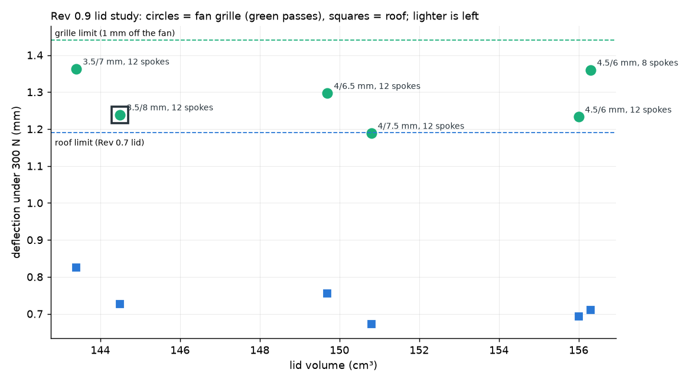
Assumptions and limits
- each variant meshed at 3 mm with quadratic tetrahedra; the same load and supports as the Strength section
Starting point: the AGX module with no heatsink
The bare module in the Rev 0.7 enclosure, natural convection only (no fan), heat spread through the aluminium thermal plate. It shows why the cooler is not optional.
| Measure | Result | Change | |
|---|---|---|---|
| 15 W: SoC package (hottest) still rising when the run stopped (-86 % energy balance, 1200 iterations): the steady value is higher. | – °C | 151.5 °C | |
| 15 W: thermal plate (hottest) still rising when the run stopped (-86 % energy balance, 1200 iterations): the steady value is higher. Limit 80 °C. | – °C | 150.8 °C | |
| 40 W: SoC package (hottest) still rising when the run stopped (-84 % energy balance, 1200 iterations): the steady value is higher. | – °C | 344.6 °C | |
| 40 W: thermal plate (hottest) still rising when the run stopped (-84 % energy balance, 1200 iterations): the steady value is higher. Limit 80 °C. | – °C | 342.9 °C |

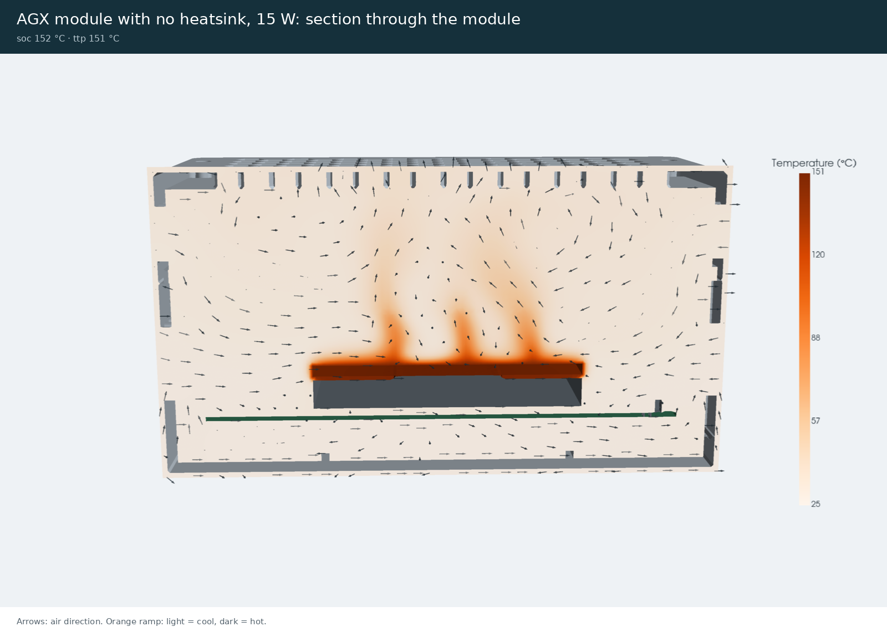

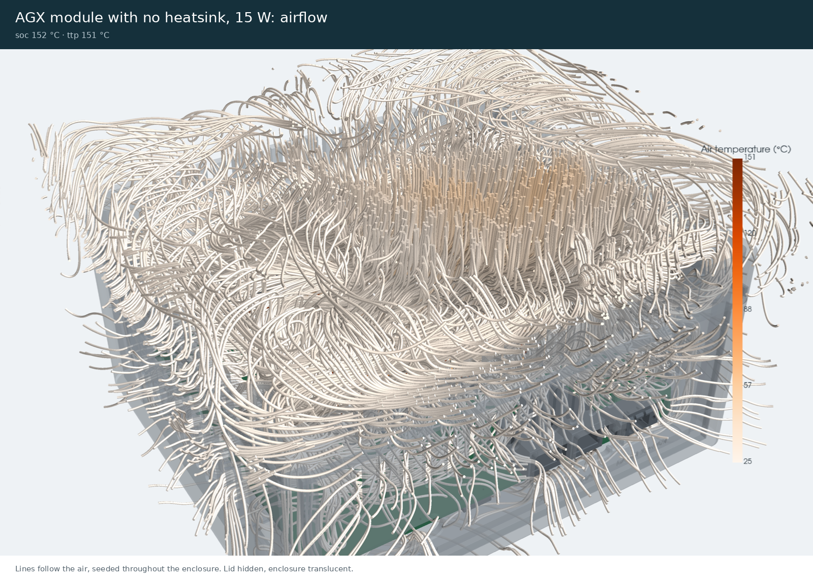

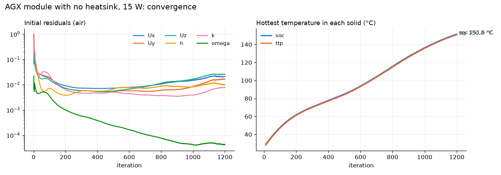
Assumptions and limits
- steady RANS (k-omega SST): natural-convection plumes really fluctuate
- no radiation: passive cases are pessimistic (radiation can carry a third of the heat from a hot plate in still air)
- walls use wall functions without prism layers, so wall heat transfer depends on the mesh: check a case one level finer before trusting a small difference
- converged means the temperatures, fan flow and heat leaving stopped changing and the heat leaving matches the heat put in (energy balance), not that the residuals reached a tolerance
- isotropic solids: heat pipes are an effective conductivity, with no dry-out limit
- obstacles (enclosure, boards) are adiabatic: the heat leaves only with the air
- fans are actuator discs with a straight-line fan curve, no swirl
With the cooler at 40 W
Rev 0.8 was simulated with the 34 mm Seeed WS-RDN-601 (80 mm, 5 V fan under a lid with an intake ring). Rev 0.9 uses the cooler actually fitted, the reComputer mini J501 heatsink: a 2 mm copper spreader, a five-heat-pipe G48R tower and a 92 mm, 12 V fan whose top sits 2.4 mm under a flush grille in the roof. The two columns compare enclosure and cooler together. The CFD resolves the enclosure, vents, grille, skirt and cooler body; the fan is an actuator disc on its datasheet curve; the thin fins are a porous block whose resistance comes from the plate-fin model.
| Measure | Before | After | Change |
|---|---|---|---|
| Thermal plate hot spot limit 80 °C | 57.2 °C | 35.6 °C | ▼ -21.6 (-38 %) · better |
| Air entering the fins room 25.0 °C; above it means hot air is being re-breathed. Rev 0.8: fan assumed to blow down (air into the fan); Rev 0.9: the fan blows up, so this is the fan's exhaust minus the fins' heat | 32.1 °C | 25.1 °C | ▼ -7.0 (-22 %) · better |
| Fan flow free air: 22.9 CFM (Rev 0.8 cooler, 80 mm 5 V fan) / 55.3 CFM (Rev 0.9 cooler, 92 mm 12 V fan) | 7.76 CFM | 23.96 CFM | ▲ +16.20 (+209 %) · better |
| Hottest air in the enclosure | 55.1 °C | 33.8 °C | ▼ -21.4 (-39 %) · better |
| Heat the fins carry at this fin temperature fins at 55.14 / 33.87 °C; the module makes 40 W. | 40.5 W | 39.9 W | ▼ -0.6 (-2 %) · worse |
| Converged, heat out = heat in energy balance -1.4 % / -0.5 % | yes | yes | |
| Fin calibration settled no: the fins still carry more (or less) than 40 W, so the plate value is an upper (or lower) bound | yes | yes |

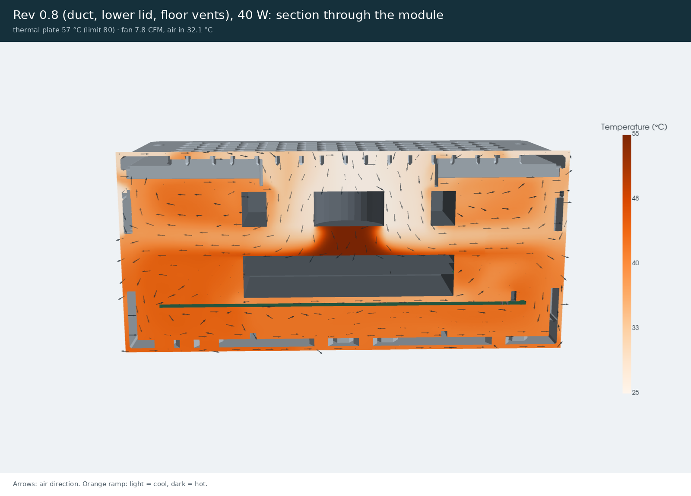

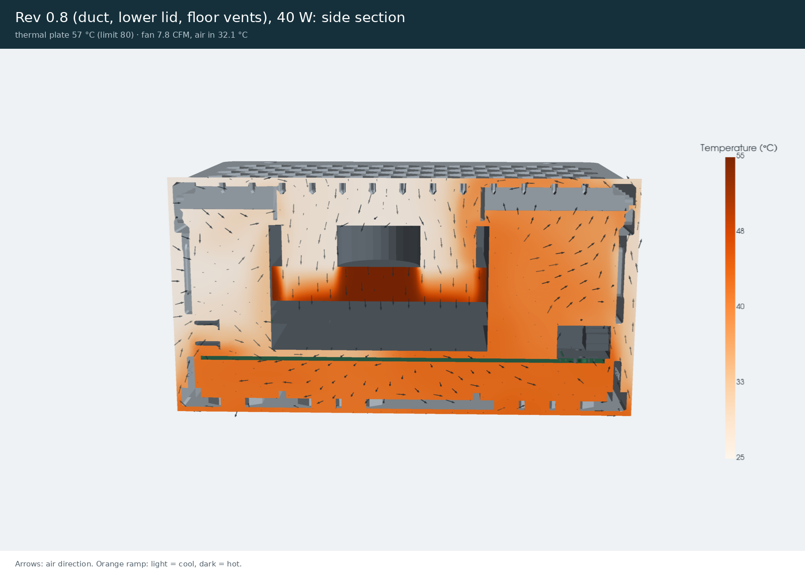

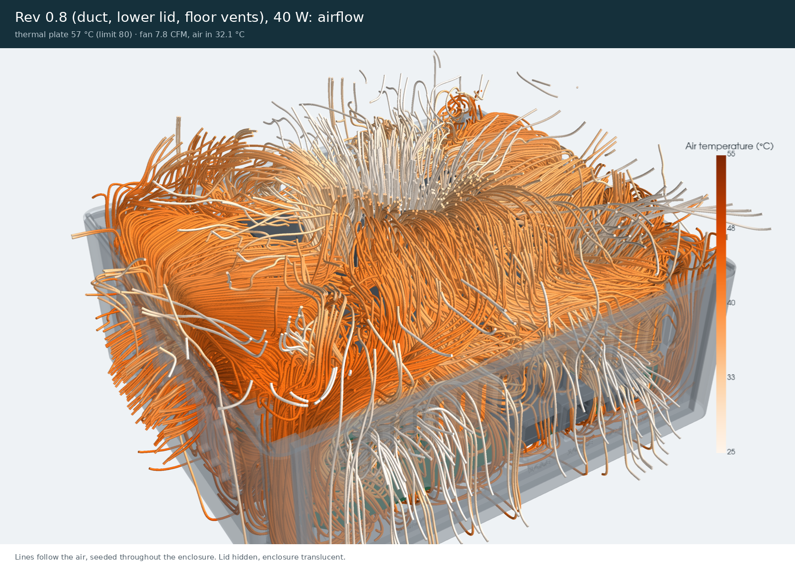

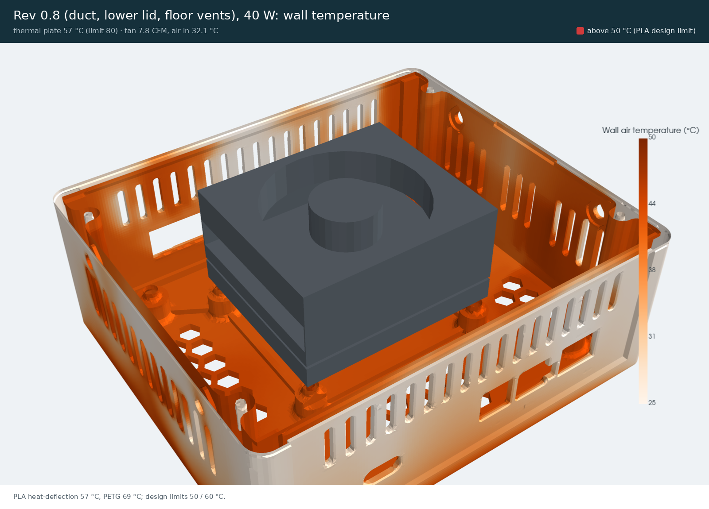

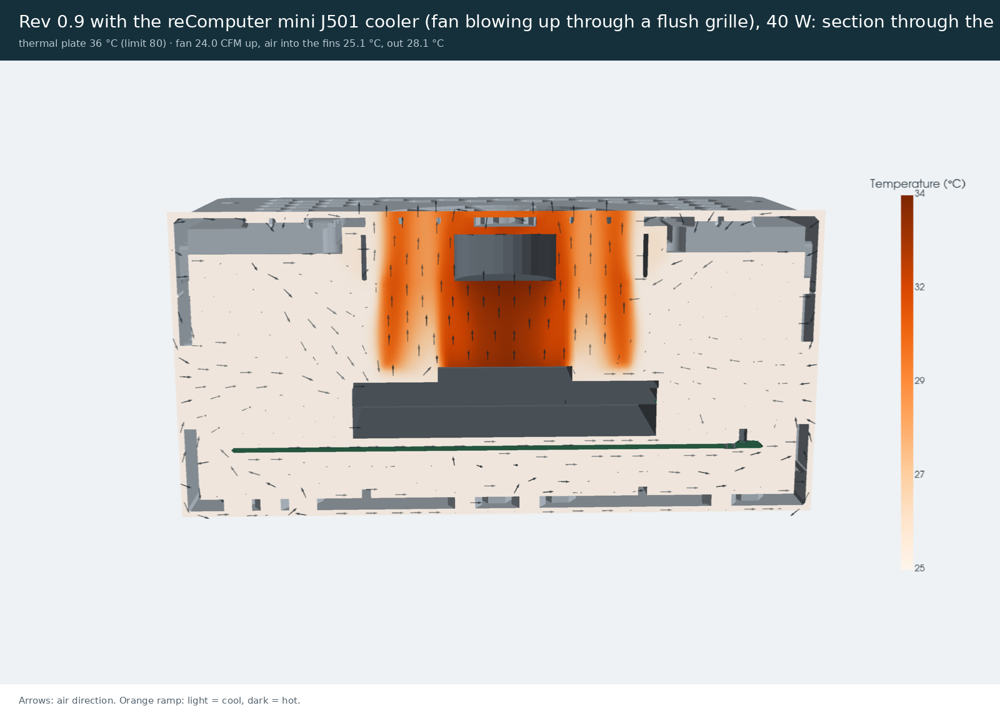

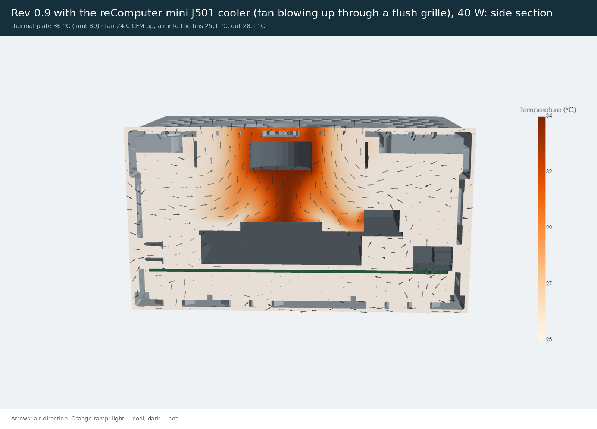

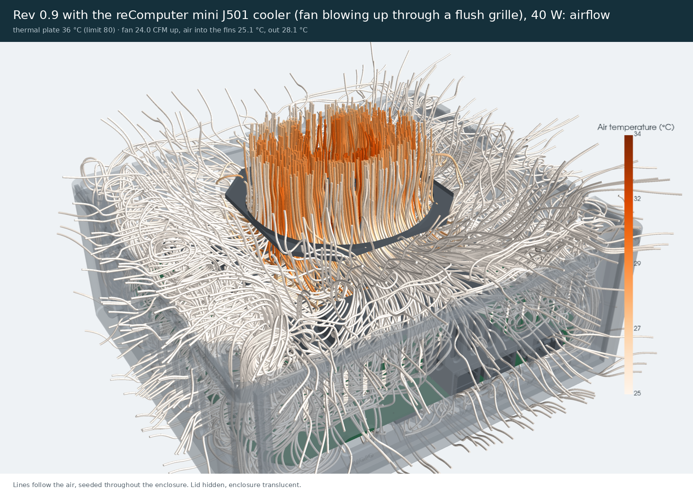

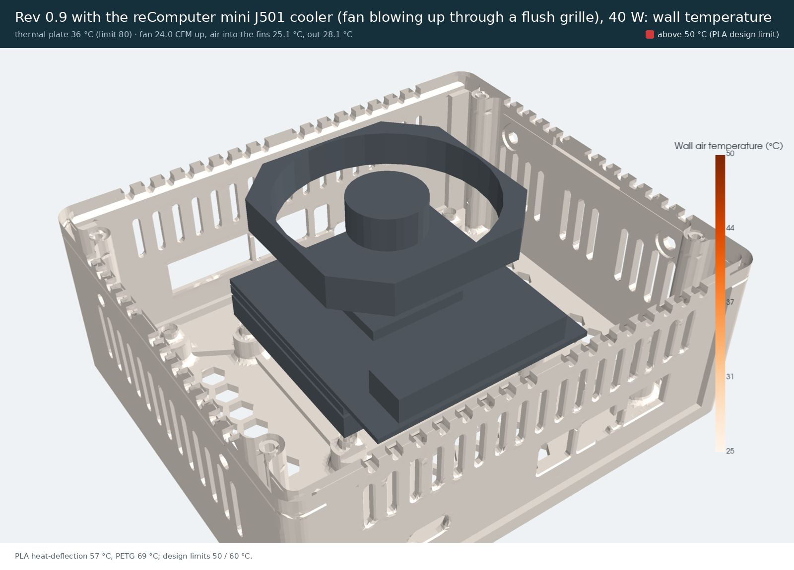
Assumptions and limits
- steady RANS (k-omega SST): natural-convection plumes really fluctuate
- no radiation: passive cases are pessimistic (radiation can carry a third of the heat from a hot plate in still air)
- walls use wall functions without prism layers, so wall heat transfer depends on the mesh: check a case one level finer before trusting a small difference
- converged means the temperatures, fan flow and heat leaving stopped changing and the heat leaving matches the heat put in (energy balance), not that the residuals reached a tolerance
- isotropic solids: heat pipes are an effective conductivity, with no dry-out limit
- obstacles (enclosure, boards) are adiabatic: the heat leaves only with the air
- fans are actuator discs with a straight-line fan curve, no swirl
- heat leaves the fin block evenly through its volume, so air in stagnant corners of the block runs hot (the mean temperatures and the fan flow are not affected)
- the fan centre is placed from a photo (about ±3 mm)
Topology optimisation
pyMOTO: minimum compliance (stiffest layout) for a volume budget, SIMP with a density filter and an overhang filter for support-free printing, solved with MMA. Features that have a job (posts, columns, feet, joints) are kept solid; the optimiser decides the rest. The result is read into the parametric CAD, not printed directly.
| Measure | Result | Change | |
|---|---|---|---|
| floor: design region kept | – % | 35.0 % | |
| roof: design region kept | – % | 15.0 % |

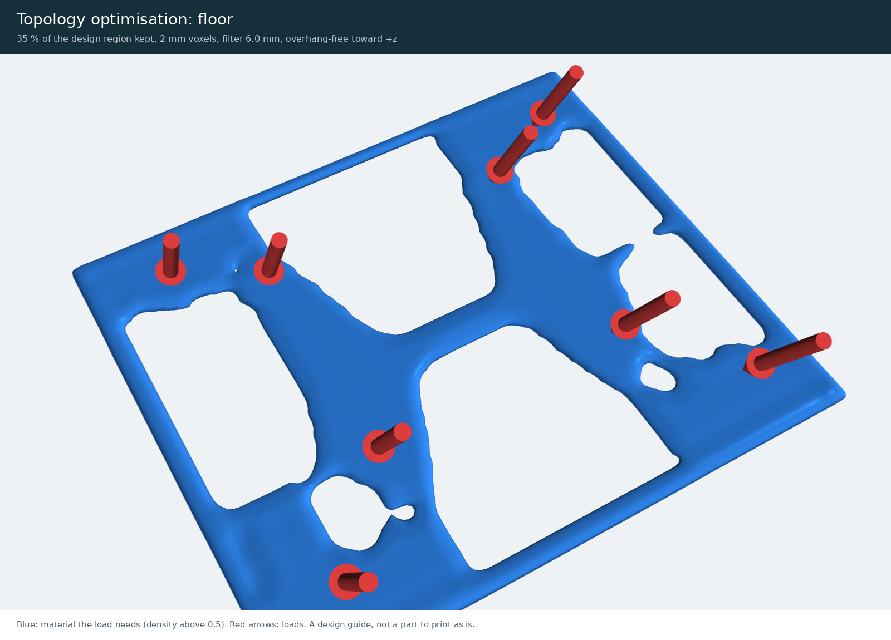

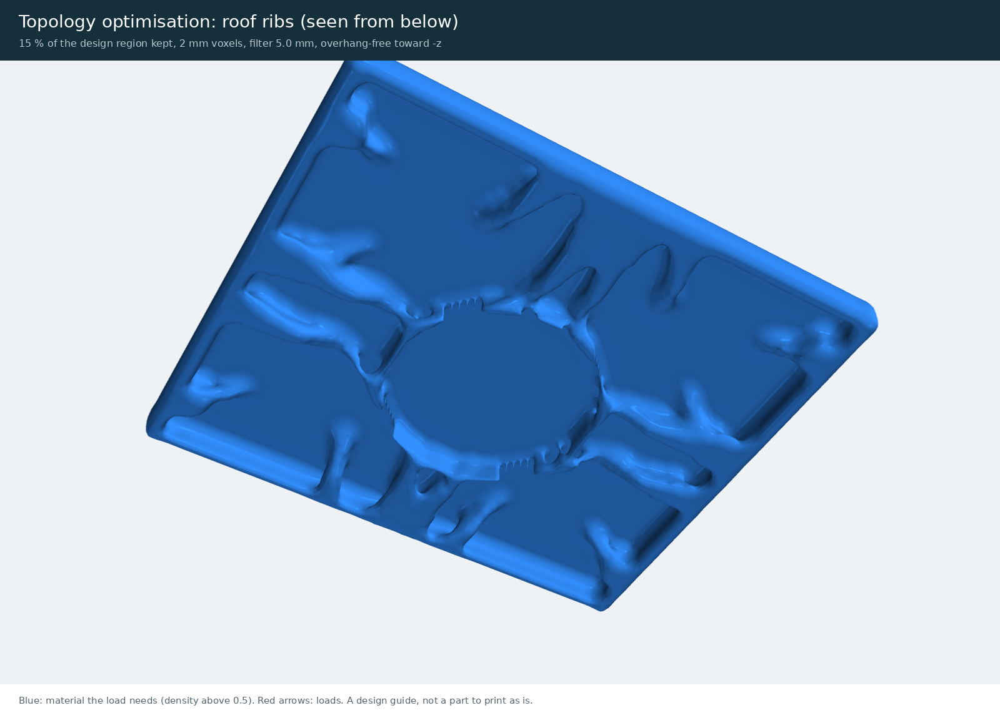
Assumptions and limits
- linear elastic, 2 mm voxels, one load case per study
- a design guide: the CAD change is checked again with FEA
Heatsink study (for later)
The plate-fin model (cadagent.heatsink) swept over fin pitch and thickness on the cooler's own fan curve: each design finds its own fan operating point. With this fan, the assumed fin stack is already close to the best one, so a different fin stack would gain little. Feeding the fan cooler air, or a fan with more pressure, matters more.
| Measure | Assumed current | Best in the sweep | Change |
|---|---|---|---|
| Plate rise above intake air at 40 W best: 1.7 mm pitch, 0.35 mm fins | 6.1 K | 6.0 K | ▼ -0.1 (-1 %) · better |
| Fan flow on the fins alone | 31.1 m³/h | 30.4 m³/h | ▼ -0.7 (-2 %) · worse |

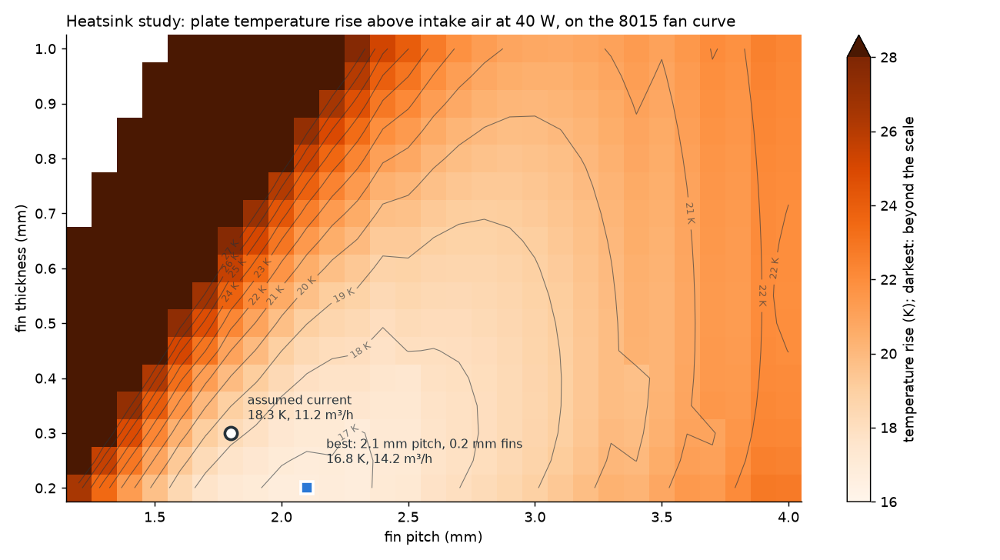
Assumptions and limits
- Plate temperature rise above the air entering the fins, at 40 W, with the fan at its operating point on each fin stack. Same envelope (100 x 87 mm, fins 14 mm tall), same 3.5 mm heat-pipe base. Analytic model; confirm the pick in CFD.